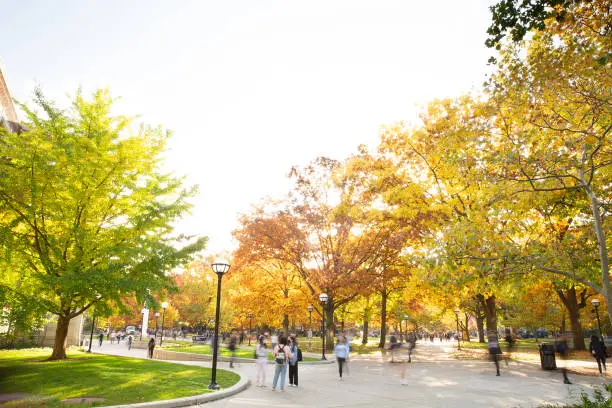
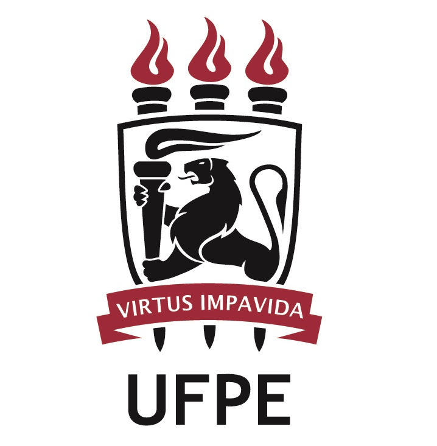
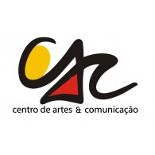

Suporte
(81) 2126-8000
suporte@concac.ufpe.br
Contato
(81) 2126-8001
contato@concac.ufpe.br


O ConCAC é um evento que envolve Extensão e Cultura dentro da Universidade Federal de Pernambuco, promovendo a integração entre a comunidade acadêmica e a sociedade através de atividades artísticas, culturais e científicas.
Este evento representa um espaço de diálogo, troca de experiências e valorização das diversas manifestações culturais e artísticas desenvolvidas no Centro de Artes e Comunicação da UFPE.
Leia maisEspaço dedicado às apresentações artísticas que valorizam a diversidade de conhecimentos e práticas desenvolvidas nos cursos de Artes Visuais, Música, Teatro e Dança.
Submeter TrabalhoÁrea para exposição de projetos de extensão e pesquisa que dialogam com as demandas sociais e contribuem para o desenvolvimento cultural da região.
Submeter TrabalhoEspaço para apresentação de trabalhos dos cursos de Jornalismo, Publicidade e Propaganda, Rádio, TV e Internet, e Cinema.
Submeter TrabalhoO ConCAC apresenta uma programação diversificada com palestras, workshops, mesas redondas, apresentações culturais e exposições, promovendo a integração entre ensino, pesquisa e extensão.
Auditório do Centro de Artes e Comunicação
Prof. Dr. Ricardo Almeida - Departamento de Comunicação
Mediadora: Profa. Dra. Mariana Santos
Salas 1, 2 e 3 do CAC
Prof. Dr. Carlos Mendes - Departamento de Comunicação
Salas 4, 5 e 6 do CAC
Auditório do Centro de Artes e Comunicação
Os certificados de participação e apresentação de trabalhos no ConCAC estarão disponíveis após o encerramento do evento.
Para acessar seu certificado, clique no botão abaixo e informe seu CPF e e-mail cadastrado durante a inscrição.
Acessar Certificados

(81) 2126-8000
suporte@concac.ufpe.br
(81) 2126-8001
contato@concac.ufpe.br